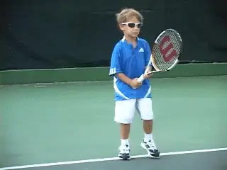
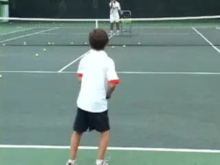
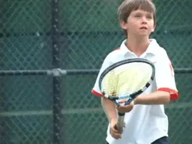
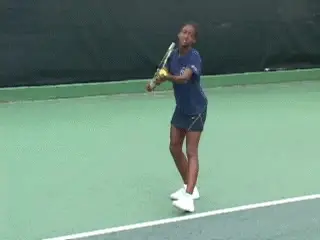
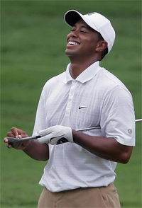

Previous: Starting Kids Right - The Forehand | 🏠 Famous Coaches Home | Next: The Approach and Volley
Starting Your Kids: The First Fundamental Is Attitude
Comprehensive unified tennis knowledge base — Fundamentals, Stroke Analysis, Reference Library, and more
Starting Your Kids:The First Fundamental Is Attitude
Rick Macci

My approach is based on hundreds of private lessons with kids from ages 4 to 6.
When you work with kids, I don't believe that there is some specific blueprint of what you have to do to produce the best possible results. When you start getting into "systems" or "methods" or you start categorizing kids too much just by age, in my opinion that's not the correct approach.
You can have a 5-year old who has better hand-eye coordination than a 10-year old. I see that all the time. So to box someone in and say, We're only going to use softballs for people 4 to 7, or we're not going to do competition until we're 10, or we're not going to teach people continental grip on the serve because they're 8 years old is incorrect.
Because what it really comes down to is the ability level of the kid. It depends on the physicality of the person. So I think we've got to be really careful how we approach each kid. I believe that recognizing what to do with a particular kid and when to do it is in the eye of the beholder.
But there are common threads that I will stress with kids no matter what age or talent level. These are understanding how to use their legs to hit the ball, trying to find the contact point, what grips to use to start on all the strokes, among others. In this new series for Tennisplayer, I am going to go over all of that on a stroke by stroke basis. But I think virtually everything I am going to say will apply to most club players as well.

In this series I'll share my approach to starting kids--but club players, pay attention.
Attitude Underlies All
When it comes to becoming the best player you can be the first fundamental is attitude. Attitude has to underline the whole process. The attitude of the teacher, and the attitude of the student. And I think the key word here is fun.
If you are an adult player that's no different for you. So many adults I see are very serious about improving, but at the same time, so self-critical and negative that they get in their own way. If they could only learn to have fun on the court and enjoy the process, it would go a long way toward helping them achieve their goals.
With the kids, all the theories, all the technical information, that's all irrelevant unless the process is fun. You have to make it very, very fun. To do this, you have to feel the moment when you can focus on the technical issues, and when you have to use motivational skills and even entertainment skills to keep them engaged.
At our best as coaches we're not just tennis teachers. Especially at this early stage of the game, we're life changers, or I hope we are. A lot of kids I work with have made major attitude adjustments in their lives. These changes all stemmed from their experience in tennis. They've improved their grades, they gotten off various medications, they've lost weight if they needed to lose weight.

Theory and technique are irrelevant without fun.
To me the art of teaching is constantly probing, to feel the temperature every day with every kid. Because it's different all the time. If you tell kids "you're going to do it this, and this is the only way to do it," well a lot of kids will just float away.
This is based on giving hundreds of private lessons to kids as young as 4, 5 and 6. To me it's like this ongoing study, and I have all these little creatures in the laboratory and I'm figuring it out everyday as I go.
How Do You Feel?
I have a question I ask almost every kid everyday. It may seem trivial but actually it makes a very important point. I say, "How do you feel today?" And almost all the kids will say "good."
And if they say "good," I'll say "Do you feel good or great?" And eventually they'll say "great." It's pretty much a standard answer now at our academy. When I ask the kids, every one of them will say "great."
Whether they really mean it or feel it at that exact moment, I'm trying to get them to understand, when you feel great about yourself and you're having fun, you're going to do better. And even with the older kids, when I know they're really upset and they're mad and it's not the best day in the world for them, and they're down 6-0, 3-0, I'll ask them, "How do you feel?" They look at me and say "great."

Tennis is about believing in yourself and your game.
If it's really hot when I'm out there on the court with a kid, I want him or her to think it's not that hot. I want them to see that the can use their minds to think whatever they want.
When you can do something or say something that you don't really feel, to me that's mental toughness. Because when you hit 3 balls in a row in the net on your forehand, a lot of kids don't have the mental skill to keep that belief in their forehand. They're going to say, "My forehand is shaky."
But a great player, he's not going to go there. There is another saying that up on my teaching court: "Your mind is either for you or against you." There really isn't any middle ground. At any given moment, it's one way or the other.
I do a lot of these types of things for the younger kids to get them to think it's only as hot as they think it is, or that a given player's serve isn't really so fast. I'm constantly finding a way to work on their mind to teach them to keep a positive attitude. It's a habit of thinking that goes way beyond tennis. Attitude is the fundamental thing because tennis is about solving problems. Tennis is about believing in yourself.

Tiger: the ultimate example of feeling great.
Tiger
The ultimate example is Tiger Woods. He can miss 17 out of 18 fairways, and he walks into the press room, and the first thing the press is going to say is, "Tiger, you're driving the ball really badly today, you missed 17 out of 18 fairways." And Tiger will say something like "Yes, but did you see how many greens I one-putted?"
He'll spin the negative. He doesn't even want to be around that negativity, even if the press is right. That's a skill and a mindset that someone at the very top has, whether in the business field or in the sports field.
Being a great tennis player is of course a package. We're going to go into all those aspects. You've got to have everything to be great.
But the mind determines a lot of things. It impacts everything from your strokes to your feet to how you play the points. That's why I thought it was important to start of with this article about attitude. It may be the shortest article in the series but it also might be the most important. So as we start to move through this series, let's keep that in mind that attitude is the first fundamental.
I don't think it's too much to ask even of a 6-year old child. And for recreational players who take these ideas seriously, the sky is the limit. That's the great thing about this game, it's always evolving to the next level.

Rick Macci has coached some of the greatest players in the modern game during their critical, formative years. He is widely regarded as one the world's top developmental coaches. Rick and his staff have shaped the strokes of Jennifer Capriati, Venus and Serena Williams, Andy Roddick, and dozens of other successful tour players. In the last 30 years, Macci students have won 134 USTA national junior championships, and have been awarded over 4 million dollars in college scholarships. Rick is a USPTA Master Pro and a member of the USPTA Florida Hall of Fame.
The Rick Macci Academy is located in Boca Raton, Florida at the beautiful Boca Logo Country Club, where Rick works in collaboration with Dr. Brian Gordon in implementing their new world class training system.
For more information about Rick's Academy, email him at: info@rickmacci.com or call Rick Macci directly at: (561) 445-2747
Source: tennisplayer.net archive — Starting Your Kids - The First Fundamental Is Attitude.docx (John Yandell teaching library, 2002-2022). Extracted and rendered as HTML for Tennis Future Lab.